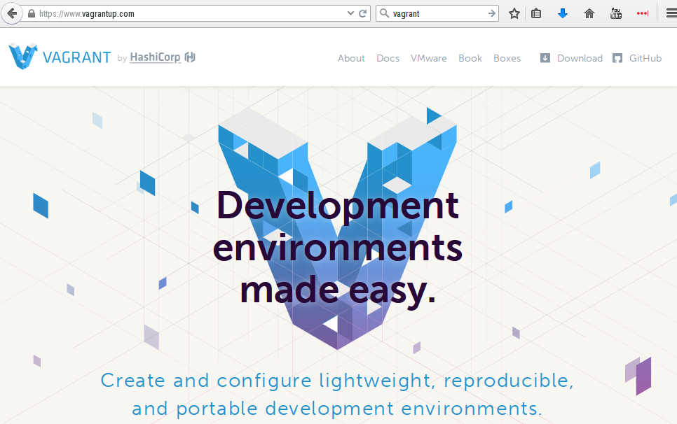

บทที่ 1 เตรียมความพร้อม¶
Note
ติดตั้งโปรแกรม
ติดตั้ง kvm¶
จะแบ่งการติดตั้งเป็น 2 ส่วนได้แต่ส่วนที่เป็น kernel module เพื่อใช้เป็นส่วนสร้าง driver ให้แก่ cpu และส่วนของ userspace เพื่อติดต่อกับผู้ใช้งาน
ติดตั้ง KVM(Qemu)¶
1 2 3 4 5 6 7 8 9 10 11 | 1 ตรวจสอบว่า cpu สนับสนุนเทคโนโลยี virtualization หรือไม่
egrep '(vmx|svm)' --color=always /proc/cpuinfo
2 Install dependencies
yum -y install kvm virt-manager libvirt libvirt-devel virt-install qemu-kvm xauth
yum -y install libguestfs-tools dejavu-lgc-sans-fonts virt-viewer bridge-utils
systemctl start libvirtd
systemctl enable libvirtd
lsmod | grep kvm
|
เครื่อง kvm host นี้จะทำหน้าที่เป็น router เพื่อจะroute traffice เข้าออก interface และมี GUI ที่ใช้สำหรับการสร้างและบริหารจัดการ vm
Libvirt NetworkManament¶

Libvirt สร้าง virtual network switch (virbr0) เมื่อมีการ start service ของ libvirtd และเมื่อมีการสร้าง vm จะมาเกาะอยู่กับ switch นี้
1 2 3 4 5 6 | ตรวจสอบ ip
$ ip addr show virbr0
6: virbr0: <NO-CARRIER,BROADCAST,MULTICAST,UP> mtu 1500 qdisc noqueue state DOWN
link/ether 52:54:00:90:cf:a9 brd ff:ff:ff:ff:ff:ff
inet 192.168.122.1/24 brd 192.168.122.255 scope global virbr0
valid_lft forever preferred_lft forever
|
NAT Network
เมื่อเราติดตั้ง libvirt จะได้ network ที่อยู่ในรูปแบบของ NAT ให้แก่ virtual machines และมีชื่อว่า default โดย เราไม่สามารถสื่อสารตรงไปยัง vm จาก network ภายนอก
1 2 3 4 | virsh net-list --all
Name State Autostart
-----------------------------------------
default active yes
|
และจะเห็นว่ามี bridge (switch)
1 2 3 | brctl show
bridge name bridge id STP enabled interfaces
virbr0 8000.52540090cfa9 yes virbr0-nic
|
DNS & DHCP Service
ในแต่ละ network switch สามารถมี service DNS, DHCP
Libvirt จะเพิ่ม iptables เพื่อควบคุม traffice ที่เข้าออก vm ผ่านทาง virbr0 ได้แก่ INPUT, FORWARD, OUTPUT และ POSTROUTING. เพิ่ม เติมความสามารถในการ forward ข้าม interface ด้วยการ เพิ่ม net.ipv4.ip_forward = 1 ให้แก่ kernel
1 2 | echo "net.ipv4.ip_forward = 1"| tee /etc/sysctl.d/99-ipforward.conf
sysctl -p /etc/sysctl.d/99-ipforward.conf
|
ติดตั้ง Virtualbox¶
1 2 3 4 5 6 7 8 9 10 11 12 13 14 | su -
# Add repo
cd /etc/yum.repos.d/
wget http://download.virtualbox.org/virtualbox/rpm/rhel/virtualbox.repo
# Install epel-repo
yum install epel-release
yum groupinstall "Development Tools"
yum install binutils gcc make patch libgomp glibc-headers glibc-devel kernel-headers kernel-devel dkms
yum install VirtualBox-5.0
service vboxdrv setup
usermod -a -G vboxusers `whoami`
reboot
|
ติดตั้ง Vagrant รวมกันกับ CentOS7¶
Note
- เราใช้ vagrant ในการสร้าง vm หรือเรียกว่า vm providers โดยสามารถใช้งานร่วมกันหลายระบบโดยเราสามารถใช้ให้ vagrant สร้าง vm ในขนาที่เราต้องการบนชั้นของ hypervisor
- เราใช้ vagrant เพื่อให้สร้าง network เพื่อสร้างการเชื่อมต่อระหว่าง vm
- เราใช้ vagrant ให้มีการ provisioning แบบที่เราต้องการได้แก่ Shell scripts, File, Puppet, Chef, Puppet, Ansible, Salt, Docker
1 2 3 4 5 6 7 8 9 10 11 12 13 14 15 16 17 18 19 20 21 22 23 24 25 26 27 28 29 30 31 32 33 | # ติดตั้ง Ruby, Ruby Gem
yum -y install ruby rubygems ruby-devel
yum -y install kvm qemu-kmv python-virtinst libvirt virt-install bridge-utils
yum -y install libvirt-devel libxslt-devel libxml2-devel virt-manager libvirt
yum -y install libvirt-python qemu-img
systemctl start libvirtd.service
systemctl enable libvirtd.service
# ติดตั้ง Dependencies
gem install json_pure
gem install nokogiri
gem install ruby-libvirt
yum -y install gcc gcc-c++ make patch libffi-devel openssl-devel zlib zlib-devel
yum -y install readline readline-devel ncurses-devel libxml2-devel libxslt-devel
yum -y install ruby ruby-devel rubygems rubygems-devel
wget https://releases.hashicorp.com/vagrant/1.8.1/vagrant_1.8.1_x86_64.rpm
yum install -y vagrant_1.8.1_x86_64.rpm
# ติดตั้ง plugin ชื่อ 'vagrant-libvirt'
vagrant plugin install vagrant-libvirt
# Download Vagrant box (image) สำหรับ libvirt
wget http://cloud.centos.org/centos/7/vagrant/x86_64/images/CentOS-7-x86_64-Vagrant-1601_01.LibVirt.box
# Download Vagrant box (image) สำหรับ Virtmanager
wget http://cloud.centos.org/centos/7/vagrant/x86_64/images/CentOS-7-x86_64-Vagrant-1601_01.VirtualBox.box
|
** การเพิ่ม box Vagrant **
1 2 3 4 5 6 7 8 | # เพิ่ม libvirt box ให้กับระบบ
vagrant box add CentOS7-libvirt CentOS-7-x86_64-Vagrant-1601_01.LibVirt.box
# เพิ่ม libvirt box ให้กับระบบ
vagrant box add CentOS7-virtualbox CentOS-7-x86_64-Vagrant-1601_01.VirtualBox.box
# ตรวจสอบ box ในระบบ
vagrant box list
|
** การสร้าง vm ด้วย vagrant **
คำสั่ง vagrant ที่ใช้สร้าง vm ไม่จำเป็นต้องเป็น root สามารถใช้งาน ใน user ปรกติได้
1 2 3 | vagrant box add {boxname} {url}
vagrant init {boxname} # จะได้ ไฟล์ชื่อ Vagrantfile
vagrant up
|
ตัวอย่าง
1 2 3 4 5 | mkdir project1
cd project
vagrant init CentOS7-libvirt
vagrant up
vagrant ssh
|
State หรือ สถานะของ Vagrant
การใช้งานคำสั่ง vagrant จะสามารถตามด้วยชื่อของ state เพื่อให้ผลตามที่เราต้องการ เช่น
- vagrant up เพื่อต้องการที่สร้าง instance
- vagrant halt เพื่อต้องการ หยุด
- vagrant destroy ต้องการทำลายทิ้ง
- vagrant reload นำกลับมาทำงานอีกครั้ง